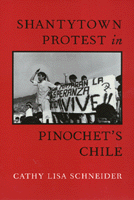

<body bgcolor="#FFFFFF" text="#000000" link="#0000FF" vlink="#CC0000" alink="#CC0000"><center><hr width="350" size="1" align="center" noshade>A study of Chile's shantytown resistance testifies to the power of popular struggles<hr width="350" size="1" align="center" noshade><p><a href="https://cdcshoppingcart.uchicago.edu/Cart/ChicagoBook.aspx?ISBN=9781566393058&&PRESS=temple" target="_top">Buy this book!</a> | <a href="https://cdcshoppingcart.uchicago.edu/Cart/Cart.aspx?PRESS=temple" target="_top">View Cart</a> | <a href="https://cdcshoppingcart.uchicago.edu/Cart/Cart.aspx?PRESS=temple" target="_top">Check Out</a></p><p></p></center><!--none//--><h1>Shantytown Protest in Pinochet's Chile</h1>
<h3>Cathy Lisa Schneider</h3>
<P>cloth 1-56639-305-1 $69.95, May 95, <FONT COLOR=#990033>Out of Stock Unavailable</FONT>
<br>paper 1-56639-306-X $35.95, May 95, <FONT COLOR=#990033>Available</FONT>
<br>Electronic Book 1-43990-546-0 $35.95 <FONT COLOR=#990033>Out of Stock Unavailable</FONT>
<BR> 296 pp
5.5x8.25
1&nbsp;table 1&nbsp;figure 12&nbsp;halftones
</P><BLOCKQUOTE><I>"</I>Shantytown Protest<I> is one of the richest and most interesting accounts of popular mobilizations in urban Latin America that I have ever seen. The description of popular resistance under conditions of extreme material scarcity and ruthless military repression is fascinating. The book is a major contribution to the research literatures on Third World urbanization and Latin America politics."</I>
<br>&#151<b>Alejandro Portes</b>, John Dewey Professor of Sociology and International Relations, The Johns Hopkins University<I></I></BLOCKQUOTE>
<p>In 1973 armed forces launched a violent attack against the Chilean presidential palace and Santiago's slums and shantytowns. For ten years, only the Catholic Church was able to defy the military regime. Then, in 1983, students, workers, and shantytown residents stormed the streets demanding the resignation of Augusto Pinochet. The protests raged for three years and, in 1989, democratic elections were held. The following year a new civilian government took office.
<p>Cathy Lisa Schneider examines this democratic transition from the bottom up, looking at the struggles of poor people to create and sustain organized resistance, to risk their lives to fight tyranny. Both an oral history based on over a hundred interviews collected in shantytowns and a comparative sociological study that explores political differences among different shantytowns in Santiago, this book analyzes the context in which the urban poor make choices about their lives, and the political histories that shape their vision.
<BR>&nbsp;<h2>Excerpt</h2><P>Excerpt available at <a href="http://www.temple.edu/tempress">www.temple.edu/tempress</a></p>
<BR>&nbsp;<h2>Reviews</h2>
<p><I>"With an anthropologist's sympathetic ear, an activist's reasoned zeal, a social scientist's theoretical sensibility, and a journalist's deft pen, Cathy Schneider has brought to life Chile's burgeoning shantytown politics of the 1980s. From the overthrow of Allende to the fall of Pinochet, she chronicles and explains the swirling of popular struggles. Read her and learn."</I>
<br>&#151<b>Charles Tilly</b>, Director, Center for Studies of Social Change, New School for Social Research
<p><I>"Cathy Schneider's book shows how democratic nation-building depends not only on how elites maneuver, but crucially on how ordinary citizens mobilize on behalf of democracy. She has successfully brought together Latin American studies and social science, the human drama of the shantytown protests with the analytical perspectives of social movement studies."</I>
<br>&#151<b>Sidney Tarrow</b>, Professor of Government, Cornell University
<p><i>"...the book provides a rich source of data for reflecting on the issues involved in a 'transition to democracy.'"</I>
<br>&#151<b><I>The Hispanic American Historical Review</I></b>
<BR>&nbsp;<h2>Contents</h2><P>
<p>Illustrations
<br>Preface and Acknowledgments
<br>Acronyms
<br>1. Introduction
<br>2. The Making of the Chilean Left
<br>3. Repression and the Consolidation of Authoritarian Rule
<br>4. The Roots of Resistance
<br>5. The Protests in the Poblaciones
<br>6. The Transition to Democracy
<br>Bibliography
<br>Index
</P><BR>&nbsp;<H2>About the Author(s)</H2>
<table><tr><td valign="top"><img src="/tempress/authors/801_au.gif" height="90" width="75"></td><td width="100%" valign="middle"><p><b>Cathy Lisa Schneider</b> is Assistant Professor at the School for International Studies at American University.</P></td></tr></table>
<BR><H2>Subject Categories</H2>
<p><A HREF="/tempress/political.html" TARGET="_top">Political Science and Public Policy</a>
<BR><A HREF="/tempress/latin.html" TARGET="_top">Latin American/Caribbean Studies</a>
</p>
<p align="center"><a href="https://cdcshoppingcart.uchicago.edu/Cart/ChicagoBook.aspx?ISBN=9781566393058&&PRESS=temple" target="_top">Buy this book!</a> | <a href="https://cdcshoppingcart.uchicago.edu/Cart/Cart.aspx?PRESS=temple" target="_top">View Cart</a> | <a href="https://cdcshoppingcart.uchicago.edu/Cart/Cart.aspx?PRESS=temple" target="_top">Check Out</a></p><p><font face="Arial" size="1"><a href="copyright.html" onMouseOver="window.status='Web Copyright Policy';return true;" onMouseOut="window.status=''" title="Web Copyright Policy">&copy;</a> 2015 <a href="http://www.temple.edu" target="new" onMouseOver="window.status='Link to Temple University home page';return true;" onMouseOut="window.status=''" title="Link to Temple University home page">Temple University</a>. All Rights Reserved. http://www.temple.edu/tempress/titles/801_reg.html</font></p>